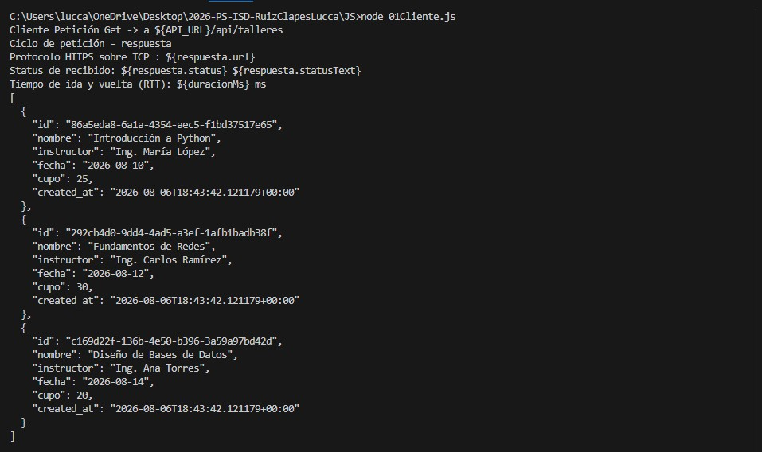

Coloca la captura de la terminal en la carpeta images/ y nómbrala 01_salida.png. Luego abre la imagen con el enlace anterior.
Se ejecutó el script que pide al servidor la lista de talleres. La respuesta fue un arreglo con objetos que contienen:
Sí: el servidor respondió con datos, por lo que la petición GET fue exitosa.
node JS/01Cliente.js
Archivo original: 01Cliente.js